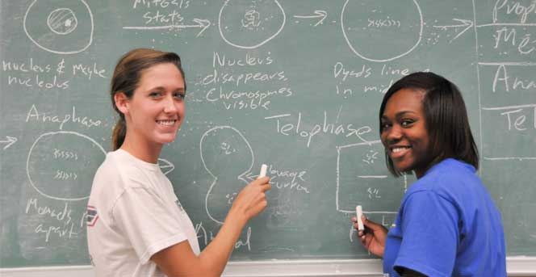

Study with us for better life
NEWS

MONDAY, APRIL 13, 2020
NEWS YOU NEED KNOW ABOUT COVID-19 IN AUM
Researchers have created a crowdsourcing site that collects county-level policy data to inform this critical decision.
WEDNESDAY, MARCH 18, 2020
AUM CS PROF. KEVIN GAO WINS TURING AWARD
In recognition of his “revolutionary impact” on computer-generated animation, AUM computer scientist and engineer Kevin Gao will share the 2019 Turing Award from the Association of Computing Machinery (ACM) – often described as the “Nobel Prize” of computing.
FRIDAY, FEBRUARY 28, 2020
SUPERCHARGE BATTERY FOR ELECTRIC VEHICLES
Using artificial intelligence, a research team has slashed battery testing times — a key barrier to longer-lasting, faster-charging batteries for electric vehicles — by nearly fifteen fold.
WEDNESDAY, MAY 27, 2020
COULD DESIGN DRUGS WITHOUT UNWANTED SIDE EFFECTS?
Researchers used computer simulations to pave the way for the discovery of safer, more effective medicines.